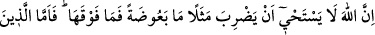
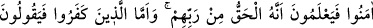
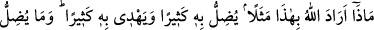
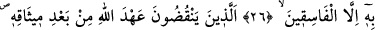
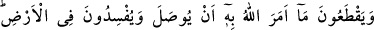
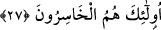

FÂSIKLAR
26. Şüphesiz Allah (hakkı açıklamak için) sivrisinek ve onun da ötesinde bir
varlığı misâl getirmekten çekinmez. İman etmişlere gelince, onlar böyle misâllerin
Rablerinden gelen hak ve gerçek olduğunu bilirler. Kâfir olanlara gelince: Allah
böyle misâl vermekle ne murâd eder? derler. Allah onunla birçok kimseyi saptırır,
birçoklarını da doğru yola yöneltir. Verdiği misâllerle Allah ancak fâsıkları saptırır
(çünkü bunlar birer imtihândır).
27. Onlar öyle (fâsıklar) ki, kesin söz verdikten sonra sözlerinden dönerler.
Allah’ın, ziyâret edilip hâl ve hatırının sorulmasını istediği kimseleri ziyâretten
vazgeçerler. Ve yeryüzünde fitne ve fesâd çıkarırlar. İşte onlar gerçekten zarara
uğrayanlardır.
Hasan ve Katâde’den rivâyet edilmiştir ki: Allah Teâlâ sinek ve örümceği kitabında
müşriklere örnek verince Yahûdîler güldüler ve: “Bu, Allah’ın kelâmına asla
benzemez.” dediler. Bunun üzerine bu âyet nâzil oldu.
“Hayâ”; ayıplanmaktan ve zemmedilmekten korkan bir kimsede beliren değişme ve
çekingenlik hâlidir. Burada Allah Teâlâ’nın, çok küçük ve basît bir varlık oluşuna
bakarak, sivrisineği örnek olarak vermekten vazgeçmeyeceği mânâsında kullanılmıştır.
Bilâkis Allah, hem sivrisinekten büyük canlıları veya ondan daha küçük varlıkları misâl
olarak verir.
Âyetteki “fevk” kelimesi, iki zıt mânâyı birleştiren bir kelimedir. Yâni bir şeyin hem
üstüne hem de altına ıtlak edilir.
Allah Teâlâ müşriklerin ilâhlarını, örümceğin evi ve sinek ile örneklendirmiştir. “Peki
onları, sivrisinek ve daha aşağı varlıklarla temsîl etmesi nasıl olur?” diye soracak
olursa derim ki: Bu âyette anlatılmak istenen şudur: Şüphesiz Allah Teâlâ, sivrisineği ve
ondan daha küçük varlıkları misâl vererek sizin ilâhlarınızın durumlarını açıklamaktan
çekinmez. O halde Cenâb-ı Hakk’ın örümceği ve sivrisineği misâl vermesi, o kadar
garib karşılanacak bir durum değildir.
Rebî’ ibn Enes demiştir ki: Cenâb-ı Hakk dünyâ ehline ibret olsun diye, sivrisineği